01 / PROJECTS
项目作品
实习期间参与的核心项目，从需求到落地的全流程实践
01
可信AI裁判评估系统
主导产品设计 · 甲方：某中信旗下国企 · 2026.02 — 2026.07
项目介绍
可信AI评估系统结合开源 LLM 评估框架 opik，对企业 AI 应用（智能体 / 通用大模型）的输出内容进行统一评估并输出评估报告，解决 AI 应用投产前「输出无统一评判标准、质量不可预测」的痛点，为 AI 应用投入实际业务奠定基础。
项目职责
- 深入调研 opik 开源框架，对其托管云服务与开发文档进行深度研究，结合甲方业务需求与开发团队共同制定产品与技术方案
- 开展项目管理，根据交付时间及开发团队工期制定排期计划，推动前后端团队紧密协作，保证各里程碑按时交付
- 管理需求变更，评估变更影响并制定解决措施，隔离甲方等干系人变更对开发团队的干扰
解决方案
- 采用 Agent-to-Agent 模式，通过 opik 的评估能力与内置指标，配置裁判模型对 AI 应用输出统一评判，生成结构化评估报告
- 采用「业务系统 + opik 本地部署 + SDK 调用」模式，数据本地化存储保障隐私性
- 模型经 OpenAI 协议接入、智能体经中间层形式接入，适配多智能体 / 多裁判模型

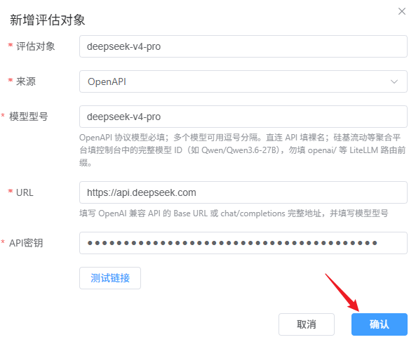
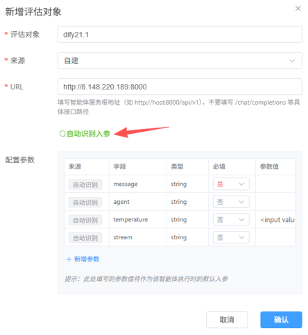
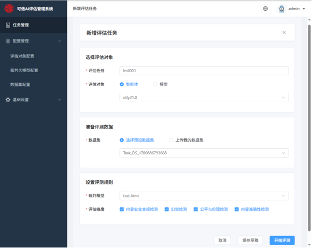
1/4
02
客户活动物料管理系统
产品实习生 · 需求管理与系统设计 · 2026.05 — 2026.07
项目介绍
面向客户活动运营的物料（礼品池）管理系统，覆盖礼品池管理、角色权限、活动核销等能力，帮助企业规范化管理活动物料的申请、发放与核销流程。
项目职责
- 主导产品需求文档从 V1 至 V6 的 6 个版本迭代，基于甲方反馈持续细化功能清单与业务规则
- 参与系统架构设计评审，输出数据库设计说明书（含 ER 图、表结构、索引策略）
- 组织项目周会与需求评审会，管理项目计划表，跟踪开发进度与风险点
解决方案
- 对接第三方接口（微信支付、短信服务、对象存储），编写接口对接文档与联调测试方案，保障链路稳定
- 针对多角色（管理员 / 运营 / 审核）设计差异化的操作权限与礼品核销流程，保证物料发放合规、可追溯
1/4
03
CS客户订单模块 (ePO)
需求分析与原型设计 · 甲方：某中信旗下国企 · 2026.04 — 2026.07
项目介绍
面向国企的财务综合平台采购订单（ePO）模块，覆盖采购订单、预算费用、库存管理、付款报表等财务全流程，帮助企业实现采购与费用的规范化、线上化管理。
项目职责
- 独立完成中英双语需求规格说明书，将甲方财务业务需求转化为清晰、可开发的产品需求文档
- 设计 HTML 高保真交互原型，覆盖工作台、采购订单管理、预算费用、库存管理、付款报表等核心页面
- 与甲方对接需求，完成 3 轮需求评审，持续跟进原型与需求文档的迭代修订
解决方案
- 梳理 CAPEX / OPEX 资本性与运营性支出的业务流程差异，针对不同费用类型设计差异化的审批与记账流程，保证财务处理的合规性
- 输出数据字典与功能清单，明确字段定义、状态流转与接口逻辑，降低开发的理解成本与返工风险

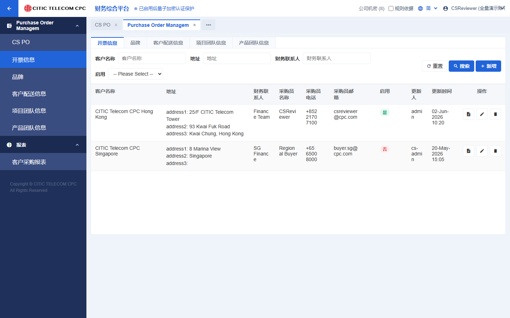
1/2
04
汉全AI营销系统
产品/运营实习生 · 文档建设与迭代管理 · 2025.09 — 2026.07
项目介绍
汉全AI营销系统专注于 AI 与 RPA 自动化相结合，提供 AI 获客、AI 销冠、AI 客服、矩阵发布等功能，为企业和商家管理客户的全生命周期，提升获客效率与客户转化率。
项目职责
- 负责 AI 营销系统的迭代计划，统筹需求评审、开发跟进及版本发布流程，确保产品按计划高质量上线
- 负责面向客户的产品演示与方案讲解，配合商务部门交付，完成 AI 手机的基础配置及系统功能培训
- 统筹规划客户生命周期管理，制定 SOP 流程、SOP 看板、SOP 任务等功能，跟踪客户完成转化的全过程
解决方案
- 针对传统获客效率低，结合 RPA 技术代替人工操作，通过 AI 扩展关键词锁定目标客户，提供「直接抓取线索」与「关键词匹配后触达」等三大获客方式，将询盘客户量提升约 20%-30%
- 针对销售培训成本高、人手不足，提供 AI 销冠功能：结合企业知识库自动接待客户，当 AI 遇到无法解决的问题或客户进入询价阶段时自动通知销售接管，销售只需处理核心环节，降低约 50% 的用工成本

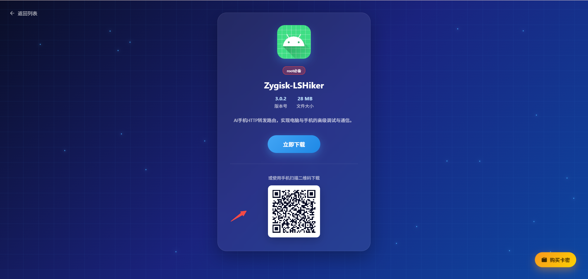
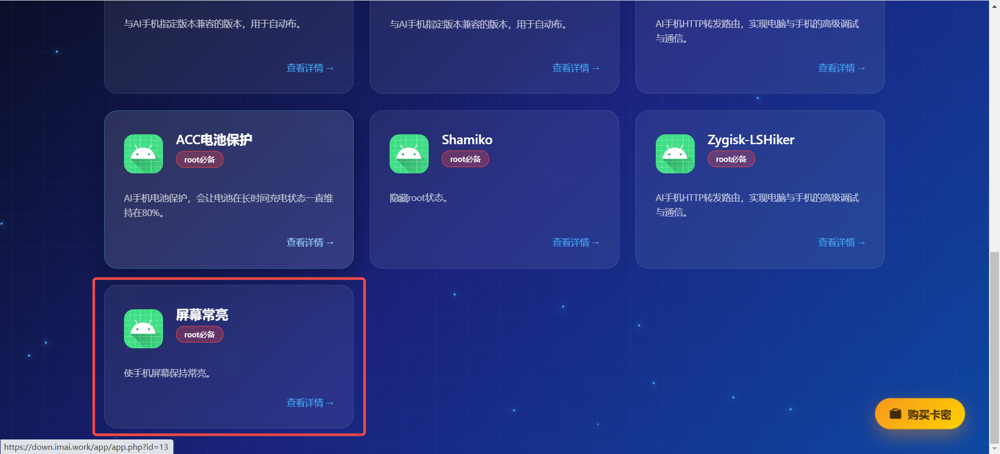
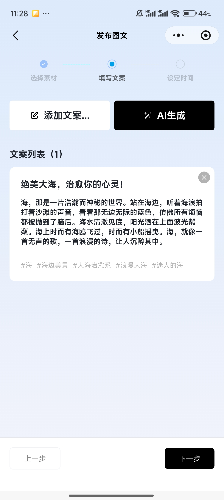
1/4
05
智能闹钟枕头App
产品实习生 · 需求分析与产品设计 · 2026.04 — 2026.06
项目介绍
为智能硬件（闹钟枕头）设计的 React Native + BLE 蓝牙双平台（iOS / Android）配套 App，实现闹钟设置、蓝牙同步、离线可用等核心能力，保障用户在弱网 / 断连场景下的可靠唤醒体验。
项目职责
- 独立完成产品需求分析与设计，输出覆盖 4 大功能模块与蓝牙配对流程的开发评审文档
- 设计中英双语 i18n 方案，覆盖导航标签、按钮文案、Toast 提示、表单标签与文档内容
解决方案
- 设计完整的闹钟状态机：响铃 30s→暂停 60s→循环，15 分钟后自动停止，蓝牙断开后本地仍可离线响铃，保证核心闹钟功能的可靠性
- 梳理蓝牙通信全链路：设备扫描→配对→同步闹钟 / 音量 / 振动档位→电量上报，明确各环节的数据结构与异常处理逻辑

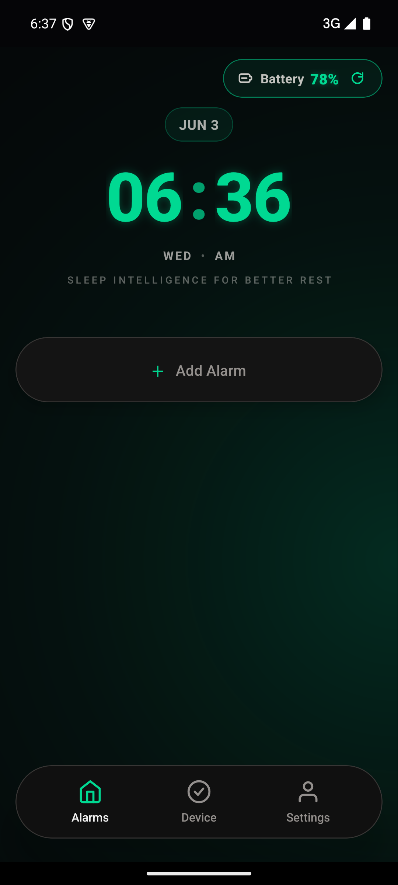
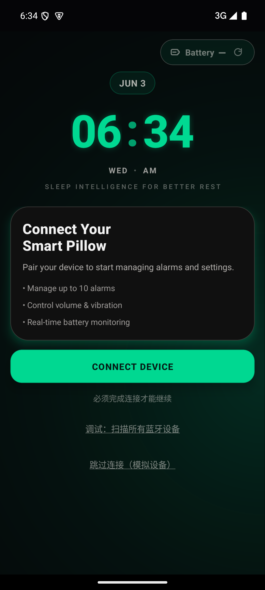
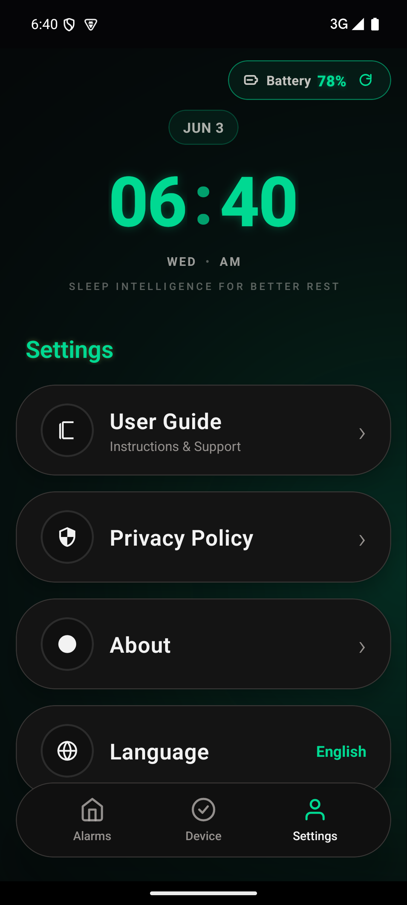
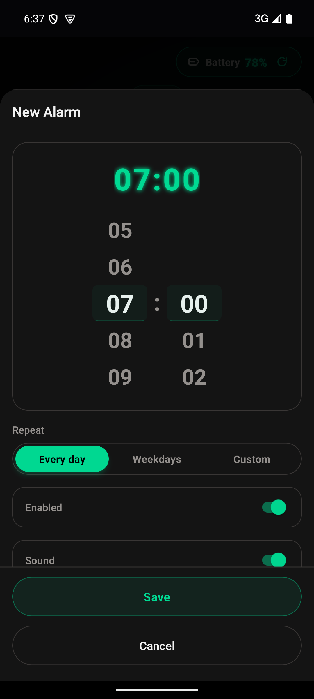
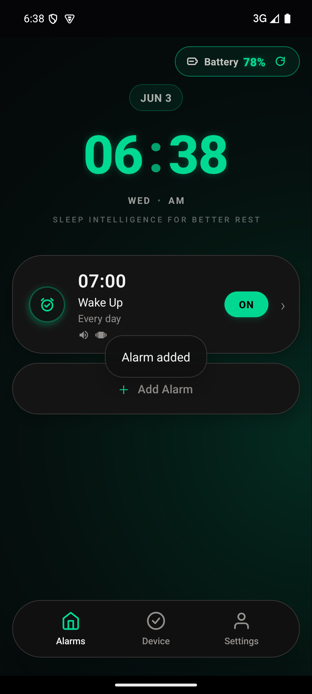
1/6
06
Next Canvas 协作画板（毕设）
毕业设计 · 全栈开发 + 产品设计 · 2025.08 — 2026.05
项目介绍
本科毕业设计《屏幕在线共享平台的几何元素设计与实现》，基于 React 19 + Konva.js + Yjs CRDT 实现支持多人实时协作的几何元素画板，可绘制、编辑、协同多种几何图形与文字、图片元素。
项目职责
- 独立完成毕业设计全流程，AI 辅助完成需求分析、竞品调研、系统设计与答辩材料
- 设计画板的图形绘制、多选编辑、文字样式、房间协同等核心功能
解决方案
- 设计静态 / 动态双层渲染策略（Konva StaticLayer + DynamicLayer），100+ 元素下稳定保持 60 FPS
- 基于 Yjs CRDT 算法实现无冲突协同编辑，端到端同步延迟 <50ms；采用 IndexedDB + SQLite 双层持久化架构，支持离线编辑自动恢复
1/4
07
AI内容生产工具链
独立探索 · 技术选型与流程搭建 · 2025.11 — 2026.07
项目介绍
基于 OpenClaw、Whisper、FFmpeg、即梦AI 等工具搭建的 AI 视频内容生产流水线，实现从素材到成片的自动化处理，显著提升内容运营效率。
项目职责
- 独立完成工具选型与流程设计，搭建可复用的 AI 内容生产链路
- 沉淀《OpenClaw 技能复刻指南》，覆盖 8 个核心技能的安装、配置、使用全流程文档
解决方案
- 实现「语音转写→字幕生成→封面标题→顶格标题→成片烧录」全自动处理流程
- 搭建社交卡片生成系统，支持小红书 3:4 图文封面（1080×1440）的自动化设计输出

1/1